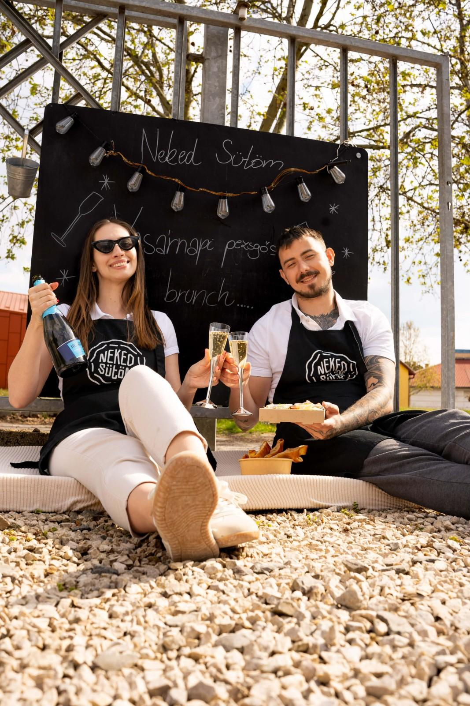
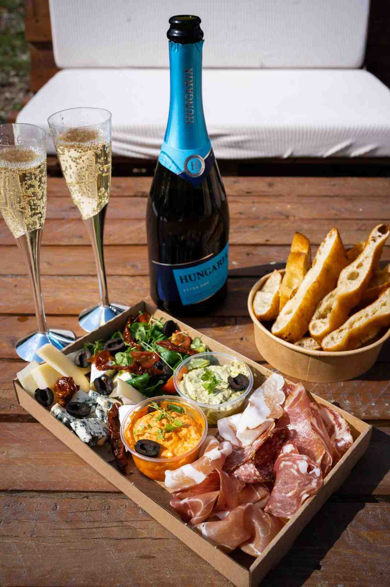
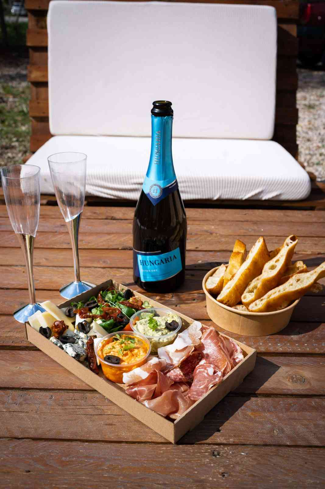
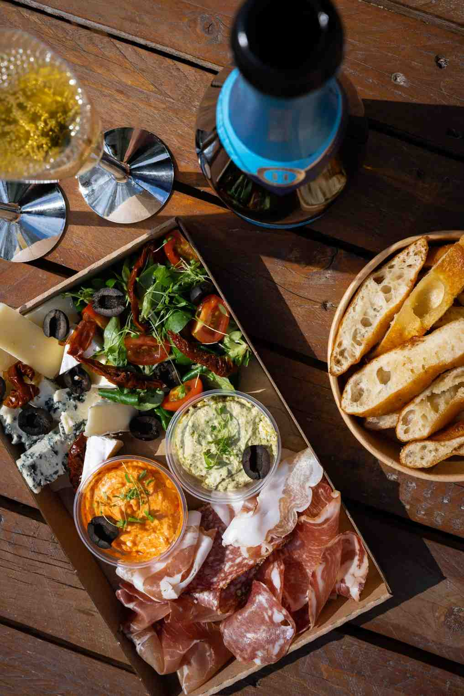
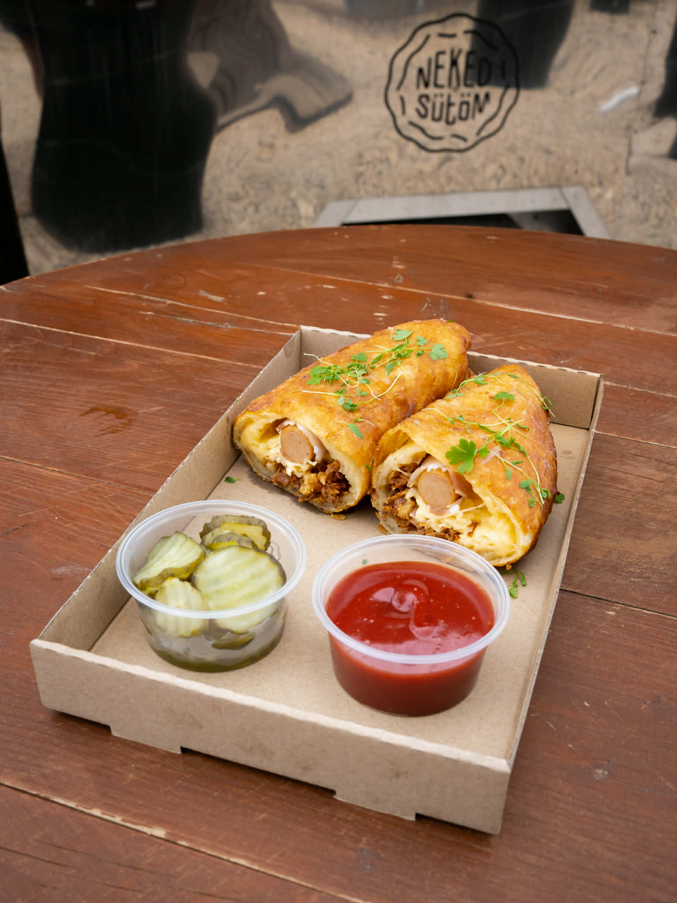

bajai kézműves lángos
Neked
Sütöm
Minden nap friss tésztából, szeretettel sütve — hagyományos receptek alapján, a ti kedvenc feltéteitetekkel. Mert a legjobb lángos az, amit neked sütünk.
A meglévő szörpjeink mellé felkerült az epres matcha latte és a matcha limonádé.
Megnézem → Neked Sütöm
Neked Sütöm Sima lángos
Sima lángos Fekete Erdő
Fekete Erdő Fánkos lángos
Fánkos lángos Sajtos-tejfölös
Sajtos-tejfölös Szörpjeink
Szörpjeink Kómás Kedvence
Kómás Kedvence ÉtteremNeked SütömSima lángosFekete ErdőFánkos lángosSajtos-tejfölösSzörpjeinkKómás KedvenceÉtterem
ÉtteremNeked SütömSima lángosFekete ErdőFánkos lángosSajtos-tejfölösSzörpjeinkKómás KedvenceÉtterem Láng-Dog
Láng-Dog Neked Sütöm
Neked Sütöm Italaink
Italaink Tejfölös lángosLáng-DogNeked SütömItalainkTejfölös lángos
Tejfölös lángosLáng-DogNeked SütömItalainkTejfölös lángosLazíts velünk minden vasárnap reggel! Kétszemélyes vagy egyszemélyes tál,
és minden bruncholni vágyó vendégnek 1 dl ajándék pezsgő jár köszöntőként.




Bőséges reggeli két főre
Gondosan összeállított, bőséges brunch tál két személynek — friss lángos alapokra építve, szezonális feltétekkel és változatos körítésekkel.
Tökéletes önmagadnak
Egyéni brunch élmény — egy főre tervezett, gondos adaggal, hogy ne maradj éhesen. Jár hozzá az 1 dl köszöntő pezsgő is.
Kovászos-burgonyás tésztából sütjük minden lángosunkat, minden nap frissen.
AlapKovászos-burgonyás tésztával, az alap — letisztult ízek kedvelőinek.
 Különleges
KülönlegesMozzarella sajttal és karamellizált körtével — elegánsabb, különlegesebb ízvilág.

SzezonálisBécsi virsli, bacon, pirított hagyma, sajt, ketchup vagy mustár, savanyú uborka.
Italaink jegesen és melegen is kérhetők! Házi szörpök, matcha italok, chai latte, sült tea és sok más frissítő vár rád.
„Szegény az az ember, akivel soha nem ült szemközt asszony, hogy szerelemmel figyelje, amint eszik."
A Neked Sütöm egy olyan hely, ahol a friss lángos illata és a jó hangulat alap. Hiszünk benne, hogy egy igazán jó lángos nemcsak étel, hanem élmény: ropogós szélek, puha belső, bőséges feltét és egy mosoly a pult mögül.
Megismerés →„Ők az ékes példája annak, hogy minőségi alapanyagokkal, odafigyeléssel egy egyszerű étel is lehet nagyszerű."
„Nagyon színvonalas hely! Életem lángosát fogyasztottam itt, nem tudtam, hogy »egy lángos« képviselhet ilyen értéket!"
„Ha az ember nem ájult el a legcukibb kiszolgálástól, akkor a kajától tuti el fog. Isteni volt, köszönjük, jövünk még!"
Gyors, friss és megbízható kiszolgálás, akár helyben fogyasztanál, akár elvitelre kérnéd.